| Lasse Braun (1936 -- )
"I believe pornography is at the
center of the biggest cultural revolution of our century."
So says Lasse Braun,
a pornography king arguably higher in stature than Hugh Hefner and Bob Guccione combined. The man was the focus of international prosecution,
taking legal bullets in stride long before Larry Flynt or Hustler
magazine. Braun's primary claim to fame was pioneering and refining the
loop: a silent 8mm or 16mm film reel taped in a circle,
suitable for private home projection and endless masturbation.
From 1961 to 1977, his
camera captured inventive, artistic, sloppy, disgusting and intense
scenes of hardcore sexual gangbangs with quite literally the most beautiful
women anyone at the time had ever seen in their lives. Danish girls with
shiny, beautiful faces getting fucked good and proper. Lesbians cat fighting,
getting filthy dirty in the mud while kissing, drooling, and smooshing
bananas. Extended outdoor blowjobs, pop shots like they were going out
of style, and so much more.
Braun's creations were lavish, his scenarios
uncensored, and his female performers extremely popular. Each
reel sold by the millions. Then they were duplicated and distributed for
additional millions. In no time at all, eight-to-twelve minute featurettes
like Piss & Orgasm, Tit Friction, Anal Libido, Cake Orgy,
and Midnight Sodomites were being viewed worldwide in arcades,
bookstores, and high-class peepshows. Because they were screened so intensely
-- over and over again in front of a blistering white light
bulb -- the average copy lasted seven days. The March 12,
1975 issue of Variety announced that Braun's French Blue
was grossing nearly $75,000 a week. This was more than twice the earnings
of The Man With The Golden Gun and Dracula. Yes, the
loops of Lasse Braun would be the foundation and building blocks for a
worldwide adult industry. He had exactly one goal: to
popularize pornography on such a massive scale that its legalization would
be inevitable.
On his eighth birthday,
Braun fucked a nine-year old Italian girl in the attic of his house, with
her enthusiastic participation. He was, after all, the son of a diplomat,
fluent in various languages, and a specialist in seduction. He had love
affairs across all of Europe and throughout law school. His radical doctorate
dissertation, Judiciary Censorship in the Western World provoked
controversy, and it was promptly censored by the establishment.
Lasse Braun personally
conceived, produced, directed, edited and marketed his films, and even
developed theories about what kind of container his porn
would be boxed in. He eschewed the plain brown wrapper, the manilla envelopes,
the small blank boxes with hand-written titles and a picture glued on.
He invented the good kind of box, the one with cutesy
girlies on the outside so you really know what you're getting. His
innovative package design distinguished his product from everything ordinary.
He set up a graphic design service bureau, the Golden Rose Center,
with a Danish art director and four assistants. The workflow he oversaw
was tremendous.
Elegantly dressed, Braun
would enter retail shops and ask if they carried "sex books"
or magazines. When they politely said no, he offered the owners free samples
of his product, suggesting that they charge a high retail
price to reap significant profit. Over time, this earned him the honest-to-gosh
nickname of Santa Claus.
Braun was tackling this
enterprise during a period in history when even brief, fleeting glimpses
of partial nudity were considered a major taboo. The Cold Was
was in full effect Nations hated each other, and pornography seemed the
perfect vehicle to incorporate a multinational police apparatus. In the
non-unified European countries like Sweden, Denmark, West Germany, Italy,
France and Spain -- printing boxes for porn or getting film
developed was extremely dangerous. Everything Braun did during the early
sixties and 1970's was a felony, and penalties in every nation
(including the United States) were as swift and brutal as one might expect.
Contraband had to be entirely concealed from police departments, pirates,
and thieves. Even distributors would be singled out as necessary victims
of the revolution, and from time to time Braun himself would bring charges
against those involved in under-the-table dealings without his implicit
participation. Lawyers on either side of these disputes would abstractly
refer to the pornography in question as "shipments".
Following John F. Kennedy's
proclamation that America would send a man to the moon, Braun proclaimed
that before the end of the decade, he would get at least one European
country to officially legalize pornography. He used aliases and moved
around. He stealthily switched offices and machinery, during which time
precious pornography was lost or destroyed. When European authorities
began judicial procedures against one of his false identities, Braun knew
he was in trouble. They were getting closer; he was forced into further
secrecy and disguise, sometimes leaving town in the dead of night. His
films were banned, causing ripples of bankruptcy throughout the community.
But Braun refused to shoot
conventional, soft-core flicks. He considered half-assed flashy titty
shows "a brain-damaging institution created by a bunch of criminals
to blind people, to milk gullible masses to the limit" But he spent
his earnings wisely. He understood that in order to attract high-spirited
sex performers and people of advanced culture into his unprecedented erotic
undertakings, he'd have to play the game. He'd have to schmooze with those
of expensive habits, deep pockets, fancy cars and drugs. But he never
once fell down. He fought the good fight. In June 1977, after fifteen
years of challenging sexual repression and achieving incredible success,
Lasse Braun retired. The number of judiciary cases piling up against him
in Italy were wearying. He'd spent a lifetime obliterating the very concept
of shame, but he'd grown to dislike the greedy, superficial attitude of
distributors. They flew in the face of his idealized movement to break
down censorship into easily disposable components.
In 1980, Braun entrusted
an ex-wife in Italy with his original prints, as he prepared to relocate
to California. Unfortunately, she discovered one of her live-in girlfriends
was a drug dealer. Not wanting any police activity in her home, and fearing
the worst, the ex-wife destroyed every last negative, film, photo and
loop. What remains of the Braun archive is burned on a handful of DVDs
here and there, and people's blissful memories.
As if this illustrious career wasn't sufficient,
Lasse Braun in his later years conducted scientific studies on 364 non-orgasmic
women (from 21 different countries) between the ages of 18 and 68. He
wished to determine if the mythical G-Spot really existed. With
the collaboration of two handsome assistants -- one Italian,
one American -- he was able to induce female ejaculation and
full shuddering orgasm in one hundred percent of his volunteers. |
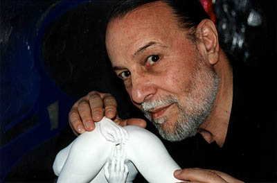
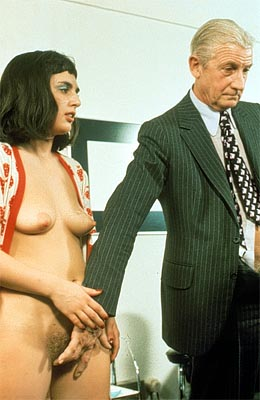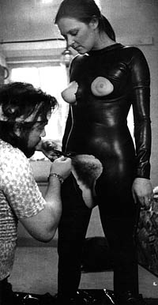
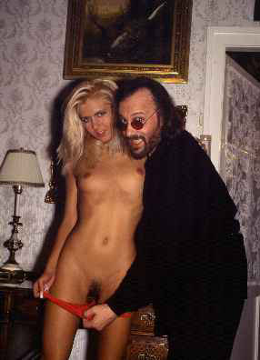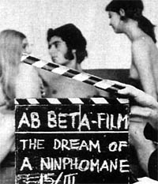

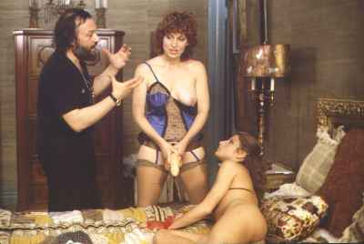
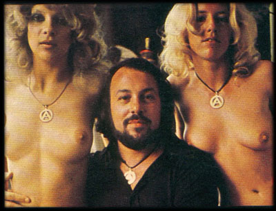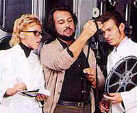
 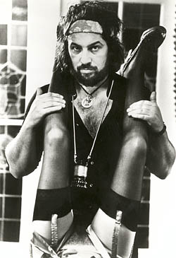 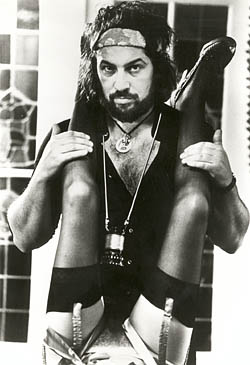
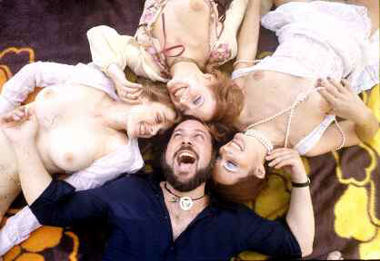 |